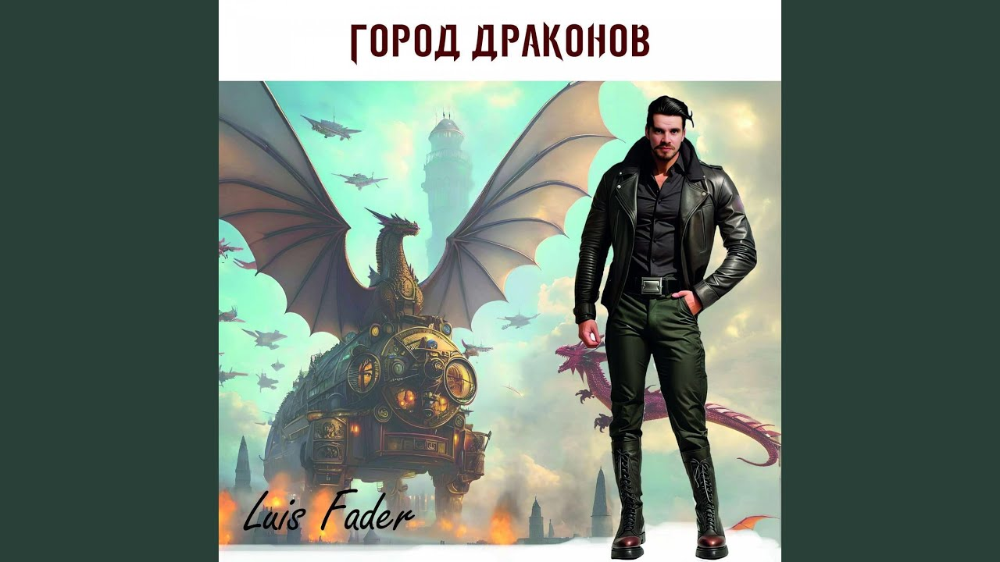

Глава 5
Встреча
В замке появляется Роберт — охотник на драконов. Но первое, что делает этот опасный незнакомец, — не нападает, а остаётся.
После тихого света и первых слов, которые не ранили, а успокаивали, замок словно перестал быть лабиринтом. Он всё ещё оставался странным, огромным и живым, но теперь в его переходах не было прежней враждебности.
Наталья шла по одному из длинных коридоров одна. Маленький дракон ненадолго оставил её, позволив впервые пройтись без его постоянного тепла у плеча. Она стояла у высокого окна, за которым плыли облака, когда услышала за спиной шаги.
Они не были мягкими. Не были скрытыми. Тот, кто шёл, не прятался.
В проёме стоял мужчина.
Высокий, сдержанный, с усталым лицом и внимательным взглядом. За плечом у него виднелось оружие.
Их взгляды встретились.
— Ты не из этого места, — сказал он.
— Как и ты, — ответила Наталья.
Он сделал шаг вперёд.
— Моё имя Роберт. Я охотник на драконов.
Сердце внутри неё сжалось.
— Тогда ты пришёл за ним, — тихо сказала она.
Роберт смотрел на неё долго.
— Я должен был, — наконец ответил он.
Наталья уловила разницу сразу. Не «пришёл». Не «хочу». А именно «должен был».
— Почему ты не нападаешь? — спросила она.
— Потому что ты стоишь передо мной.
Эти слова прозвучали так просто, что Наталья не сразу их поняла.
В этот момент из тени бесшумно вышел маленький дракон. Он подошёл к Наталье и остановился рядом. Роберт мгновенно напрягся, но не двинулся.
— Вот он, — сказала она. — Смотри.
Роберт смотрел долго. Слишком долго для человека, который должен был лишь вытащить оружие и закончить дело.
— Он маленький, — произнёс он почти хрипло.
— И живой, — ответила Наталья.
Роберт шагнул ближе совсем немного.
— Ты не боишься меня, — сказал он.
Она хотела ответить быстро. Но правда была сложнее.
— Я боюсь того, что ты можешь сделать. Но не тебя самого.
И впервые за всё время его взгляд дрогнул.
— Мне не следовало тебя встречать, — сказал он.
— Но ты встретил.
— Да.
— И что теперь?
Вопрос завис между ними.
За окном плыли облака. Замок слушал. Дракон молчал.
А человек, пришедший убивать, вдруг оказался не способен даже сделать шаг в сторону своей прежней цели.
Роберт медленно выдохнул.
— Теперь я должен понять, почему не могу уйти.
Наталья ничего не ответила.
Но внутри неё уже звучал ответ.
Потому что он тоже остался.